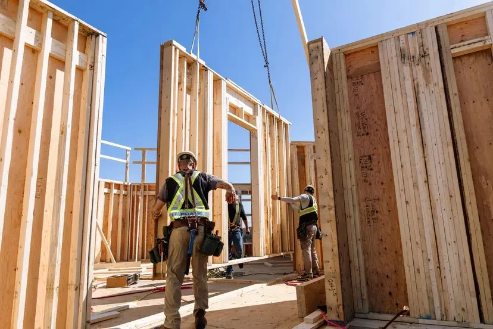
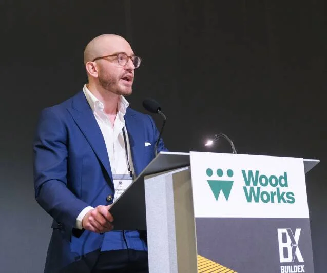
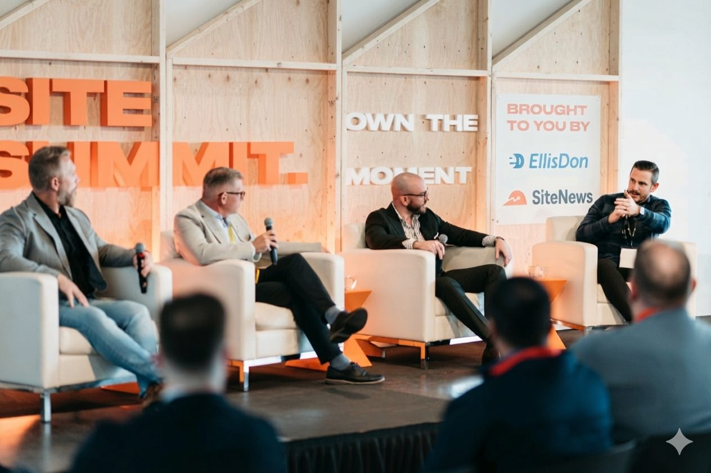

Shawn is a strategic growth executive and structural engineer with more than a decade of experience leading innovation in construction. He serves as a trusted advisor to public agencies, housing authorities, developers, manufacturers, and scaling ventures to develop and execute growth strategies, commercialize new products, and de-risk market adoption.
His advisory practice is backed by an extensive network and diverse operating experience across the construction ecosystem. Most recently, as Vice President of Strategic Growth at Intelligent City, Shawn led the company's go-to-market & sales strategy, successfully scaling the company's prefabricated mass timber product platform from demonstration to commercial scale. Prior to that, as Executive Director of WoodWorks BC, he directed industry-wide market development, orchestrating a strategic transformation and ecosystem-building effort that expanded market adoption and policy impact in North America's leading wood construction jurisdiction.
Before stepping into executive leadership, Shawn spent more than six years as a structural engineer at Fast + Epp, specializing in mass timber and hybrid structures — providing a technical foundation that gives him firsthand understanding of the challenges involved in bringing innovative technologies to market.
An influential voice on the business of industrialized construction, Shawn currently serves on the Association of Neighbourhood Houses of BC Board of Directors, and holds past appointments to the BC Office of Mass Timber Implementation Advisory Council and BC Housing's DASH Leadership Council. He earned his MBA from the UBC Sauder School of Business, a Master of Engineering from Carleton University, and is a licensed Professional Engineer.
Venture-backed manufacturer of an industrialized, prefabricated mass-timber housing platform.
- Directed overall growth strategy and revenue operations, overseeing sales, marketing, pricing, partnerships, and account management.
- Partnered with the President and Board on corporate growth, capital-raising, and manufacturing expansion strategy.
- Led strategic product and market pivots, repositioning the offer to eliminate sales channel conflicts and secure product-market fit.
- Established and implemented the go-to-market strategy and infrastructure, defining target markets, ideal client/partner profiles, and a design-assist delivery model.
Market development program dedicated to increasing adoption of wood in construction.
- Served as executive lead with full operational and financial oversight, driving strategic, governance, and funding transformation.
- Authored and executed a multi-year strategic plan that positioned the organization as the region's primary authority on timber construction.
- Cultivated an industry-wide stakeholder network across the AEC+D and wood products value chain and expanded strategic partnerships.
- Built a high-performing, multidisciplinary technical advisory team.
Award-winning structural engineering firm and international leader in mass timber and structural innovation.
- Directed the delivery of complex, precedent-setting projects across Canada while overseeing firm-wide resource planning.
- Led operational improvement initiatives to strengthen project delivery, project management, and QA/QC systems.
- Partnered with leadership to advance business development and strategic growth initiatives.

Education
- MBA, UBC Sauder School of Business
- M.Eng. Civil Engineering, Carleton University
- B.E.Sc. Civil Engineering, Western University
Designations
- P.Eng., Engineers and Geoscientists BC
- P.Eng., Professional Engineers of Ontario
Board & community leadership
- Association of Neighbourhood Houses of BC — Board Director2026–Present
- BC Office of Mass Timber Implementation — Advisory Council2022–2025
- BC Housing (DASH Program) — Leadership Council2024–2025
- Forestry Innovation Investment — Market Acceptance Advisory Committee2022–2025
- BCIT Mass Timber Education — Advisory Board2023–2025
Shaping the conversation on industrialized construction


Selected speaking
- BUILDEX Vancouver, 2026Challenging Convention with Innovative Timber Solutions
- WoodWorks BC Network, 2026Capturing Canada's Prefab Moment
- BC Council of Forest Industries Convention, 2025Trees to Keys: Growing the Canadian Market for BC Wood
- The Buildings Show, 2025Hälsa: Ontario's Tallest Mass Timber Residential Building
- Urbanarium City Debate, 2025Mass Timber Is Not Worth the Risk
- Site Summit, 2025Unlocking the Business Case for Mass Timber
- WoodWorks Summit, 2024Accelerating Mass Timber in Canada
- BUILDEX Vancouver, 2024Lessons Learned from the World's Largest Mass Timber Fire Test
Podcasts
-
The Site Visit Podcast, 2025Wood Revolution: Building Taller, Smarter, Greener
-
BIV Today, Business in Vancouver, 2024Key insights from new research on the fire safety of mass timber
Featured in
-
Journal of Commerce, 2025Is mass timber worth the risk? It's a birch of a problem
-
Daily Commercial News, 2024Panel provides cross-Canada look at accelerating the adoption of mass timber
-
Wood Central, 2024Mass timber could make up 25% of apartments — is Canada ready?
-
Vancouver Is Awesome, 2024Vancouver council allows mass timber buildings up to 18 storeys
-
naturally:wood, 2023Latest testing further documents mass timber's fire safety